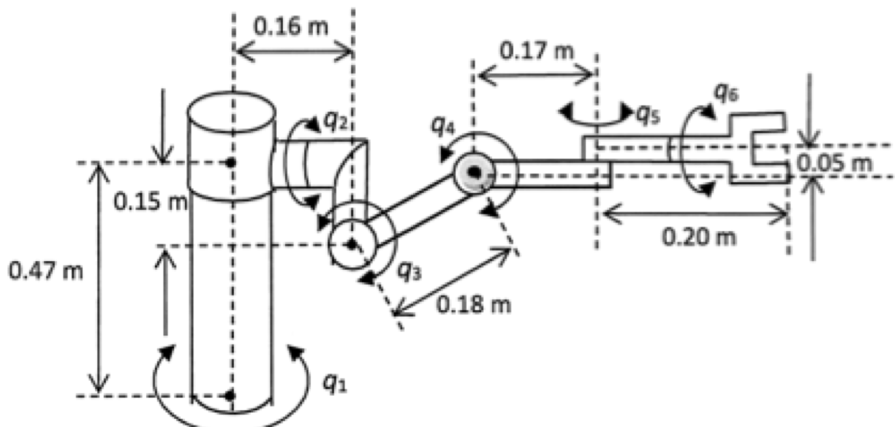
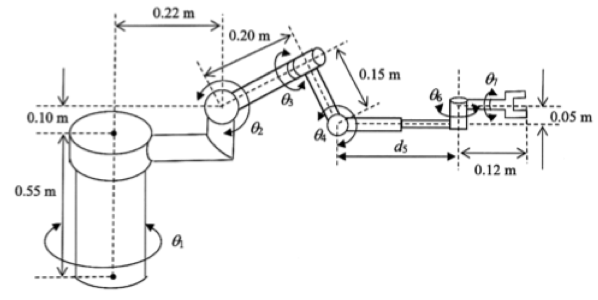
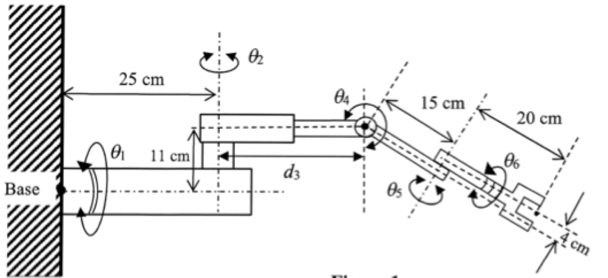
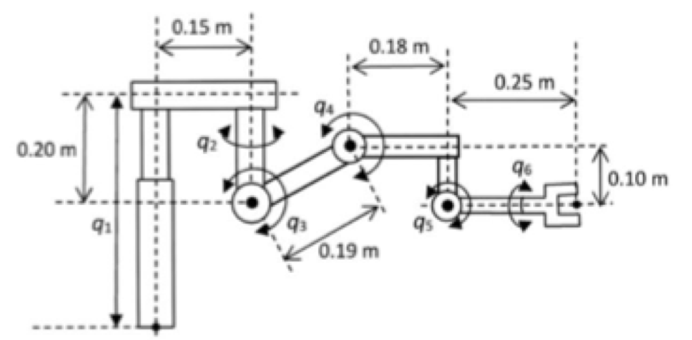

EE6221 · Quiz 1 scope · Tutor past-paper set (Mock 5)
Source and status. These are the kinematics questions in the unofficial tutor review slides (resources/ee6221-tutor-exam-review-2026.pdf, pp. 4–26). The tutor labels them as past final-exam questions, not past Quiz 1 papers. The dynamics and control half of the slides (pp. 27–58) is outside the Quiz 1 scope and is left out. Each D–H question is exam-sized (20 marks), so this set is longer than a real quiz, which has two questions in about 30 minutes according to unofficial reports. Suggested practice timing: about 25 minutes per D–H question and 20 minutes per inverse-kinematics question. This timing is a study choice, not an NTU rule.
Use standard D–H, \({}^{k-1}T_k=R_z(\theta_k)\,T_z(d_k)\,T_x(a_k)\,R_x(\alpha_k)\):
- \(\theta_k\) is the angle from \(x_{k-1}\) to \(x_k\), measured about \(z_{k-1}\).
- \(d_k\) is the distance from \(x_{k-1}\) to \(x_k\), measured along \(z_{k-1}\).
- \(a_k\) is the distance from \(z_{k-1}\) to \(z_k\), measured along \(x_k\).
- \(\alpha_k\) is the angle from \(z_{k-1}\) to \(z_k\), measured about \(x_k\).
Draw every frame, including the base frame 0 and the tool frame. Consistent alternative frame choices are acceptable.
Section A · D–H modelling
Q1 · Six-joint arm 20 marks
Tutor p. 9, labelled 23-24 S2 Q1
A robotic manipulator with six joints is shown in Figure A1.

- Obtain the link coordinate diagram by using the Denavit–Hartenberg (D–H) algorithm. (12)
- Derive the kinematic parameters of the robot based on the coordinate diagram obtained in part (a). (8)
Q2 · Seven-joint arm with a prismatic joint 20 marks
Tutor p. 11, labelled 22-23 S2 Q1. The same robot is used by quiz-01-stretch-01.html.
A robotic manipulator with seven joints is shown in Figure A2.

- Obtain the link coordinate diagram by using the D–H algorithm. (12)
- Derive the kinematic parameters of the robot based on the coordinate diagram obtained in part (a). (8)
Q3 · Wall-mounted six-joint arm 20 marks
Tutor pp. 13 and 15, labelled 24-25 S2 Q1. Dimensions are in centimetres.
A robotic manipulator with six joints is mounted on a wall, as shown in Figure A3.

- Obtain the link coordinate diagram by using the D–H algorithm. (11)
- Use the link coordinate diagram from part (a) to derive and tabulate the kinematic parameters of the robot. Compute the link-coordinate homogeneous transformation matrices of the first 3 joints, using the matrix given above. Multiplying the matrices is not required. (9)
Q4 · Six-joint arm on a prismatic column 20 marks
Tutor p. 4 (the tutor's "problem definition" example). The slide labels it "22-23 S2", which conflicts with Q2's label, so its year is uncertain. The tutor gives no solution for it.
A robotic manipulator with six joints is shown in Figure A4.

- Obtain the link coordinate diagram by using the D–H algorithm. (12)
- Derive the kinematic parameters of the robot based on the coordinate diagram obtained in part (a). (8)
Section B · Tool configuration and inverse kinematics
Q5 · Four-variable arm on a mobile platform
Tutor pp. 17 and 22 (year not labelled; marks not shown)
A robot manipulator with four joint variables is mounted on a mobile platform. The transformation from the tool tip to the base coordinate frame is
\[ T_{\text{base}}^{\text{tool}}=\begin{bmatrix} -S_1S_3C_4-C_1S_4 & -S_1S_3S_4-C_1C_4 & -S_1C_3 & S_1q_2+0.25\,S_1C_3\\ C_1S_3C_4-S_1S_4 & -C_1C_3S_4-S_1C_4 & C_1C_3 & C_1q_2+0.25\,C_1C_3\\ -C_3C_4 & -C_3S_4 & -S_3 & -0.25\,S_3+0.25\\ 0&0&0&1\end{bmatrix} \]Here \(q_1, q_2, q_3\) are the joint variables of the major axes, \(q_4\) is the tool roll angle, \(C_k=\cos q_k\) and \(S_k=\sin q_k\).
- Derive the tool-configuration Jacobian matrix of the manipulator.
- Given \(x=0.2\), \(y=0.2\) and \(z=0\), solve the inverse kinematic problem to obtain \(q_1, q_2, q_3\). Orientation is not required.
- Determine the approach vector of the robot at this joint configuration.
Q6 · Three-variable arm on a mobile robot
Tutor p. 25, labelled 22-23 S2 Q3(b) (marks not shown)
A robot manipulator with three joint variables \(q_1, q_2, q_3\) is mounted on a mobile robot. The link-coordinate homogeneous transformation from the base frame to the tool frame is
\[ T_{\text{base}}^{\text{tool}}=\begin{bmatrix} C_1C_2 & -S_1 & C_1S_2 & C_1S_2(q_3+0.1)\\ S_1C_2 & C_1 & S_1S_2 & S_1S_2(q_3+0.1)\\ -S_2 & 0 & C_2 & C_2(q_3+0.1)\\ 0&0&0&1\end{bmatrix} \]Here \(S_1=\sin q_1\), \(S_2=\sin q_2\), \(C_1=\cos q_1\) and \(C_2=\cos q_2\).
- Solve the inverse kinematic problem using an analytic method, expressing \((q_1,q_2,q_3)^{\mathsf T}\) in terms of the end-effector position \((x,y,z)^{\mathsf T}\). Orientation is not required.
- The robot is used to pick up an object whose centroid is at \(x=0.15\), \(y=0.25\), \(z=0.025\) units. Calculate the joint configuration, and discuss the problems associated with this task.